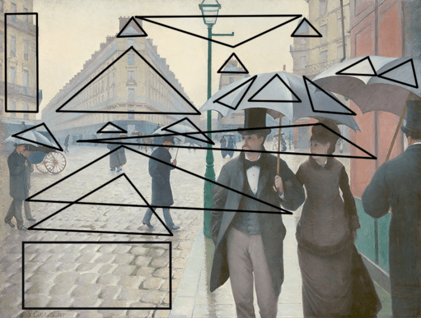
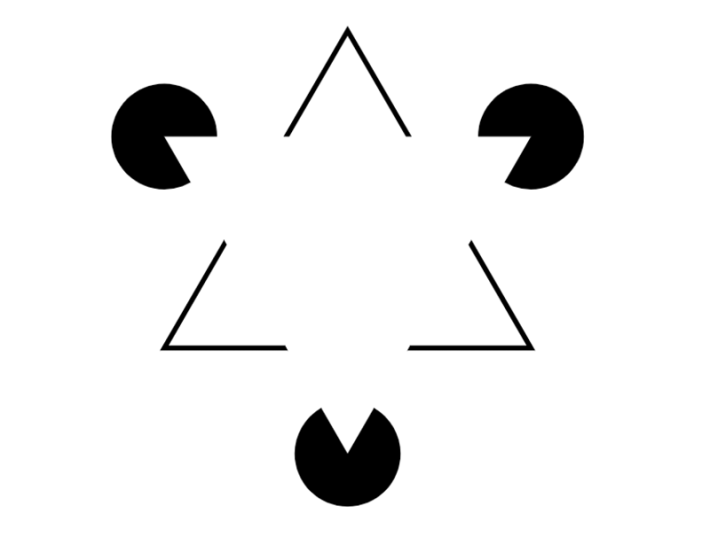

Made at the high point of Kline, de Kooning, and Pollock, Andy Warhol’s Campbell’s Soup Cans was a poke in the eye of abstract expressionism. Not only was it blatantly mimetic, but it was being blatantly mimetic with a mundane commercial product found in every supermarket and corner grocery store in America. When people think of repetition in painting, they probably think first of these iconic soup cans.
But not all repetition is as in-your-face or as disruptive as Campbell’s Soup Cans. One painting from the Impressionist period is particularly pertinent. I am thinking of Paris Street; Rainy Day by Gustave Caillebotte. Currently housed in the Art Institute of Chicago, it was originally exhibited at the Third Impressionist Exhibition in Paris in 1877. It is probably Caillebotte’s best-known work. I consider it a masterpiece and regret that I have never seen the real thing. Even so, it never ceases to bowl me over. Discussions of it typically focus on the incredible verisimilitude of the painting, the sense that it is photographic in its vivid capture of an ordinary moment.
Thus, art critic Sebastian Smee observes in an article in The Washington Post dated Jan. 20, 2021:
Caillebotte compressed different sensations of time and movement into the same picture. A stroll to the farthest visible point could chew up half an hour. But this current predicament—a potential pedestrian collision—will play out in seconds. Do we veer left or right? Our instinctive hesitation is complicated by the man coming into the frame from the right. The space is simply too tight. And all these umbrellas aren’t helping!
Smee’s comments are directed not at the form of Caillebotte’s masterpiece, but at its content. That is, of course, not unusual. It is reminiscent of critics of poetry recording their personal evocations for public consumption. But is it helpful? Well, in some cases, when a scene from history or mythology is portrayed, it is nice to know what is going on. Think of Judith with the Head of Holofernes by Botticelli, the bodiless head held dangling by its hair from Judith’s left hand, a sword in her right. Explaining what is going on is the stuff of iconography, but it doesn’t help much in shedding light on why the painting is deemed a masterpiece.
Human beings find repetition pleasurable.
When the French painter Paul Delaroche first saw a daguerreotype in 1839, he is supposed to have said, “From today, painting is dead.” He must have been coming from the view that the image was all. From that starting place, it is not unreasonable to ask, What is the point of going to all the trouble of making an image on canvas when a camera can do it much more accurately and much more efficiently? Obviously, Delaroche’s five-word obituary for painting was, like reports of Mark Twain’s demise, premature. But why? What is it about painting that has kept photography from slaying it?
I will try to shed some light on that. I begin by asking, Where does the pleasure come from? Smee’s description implies that he finds the painting a source of pleasure. I do as well. But describing the scene isn’t much help. Anyone can do that, though perhaps not as eloquently as Smee.
The first thing to observe about this painting is that it is wholly about faces, places, and bodies—three categories our brains are specially wired to recognize. The fusiform face area is dedicated to face recognition. Its neurons fire if the subject is looking at a face. But if the subject is shown a tree, or a car, or anything other than a face, the fusiform face area stays quiet. The nearby parahippocampal place area, meanwhile, responds to environmental scenes like landscapes. Damage to the parahippocampal place area (for example, due to stroke) often leads to a syndrome in which patients cannot visually recognize scenes even though they can recognize the individual objects in the scenes (such as people, furniture, etc.). A third area is also relevant: the extrastriate body area, which selectively responds to images of human bodies and body parts (excluding faces).
As you can imagine, all three areas are going to light up like the sky on the Fourth of July in the brain of anyone standing in front of Rainy Day. In that regard, it is precisely like the eight centuries of Western painting that went before it, from Cimabue’s Crucifix (1288) through Meissonier’s Campaign of France (1864) and Caillebotte.

VISUAL RHYME: Gustave Caillebotte’s Paris Street; Rainy Day (1877) is designed to elicit visual rhyme as a source of pleasure. Here it is overlaid with triangles and rectangles implied by the scene. Credit: Wikimedia Commons.
But that doesn’t get us closer to why Caillebotte’s painting is so pleasant to look at. Or does it? Art critics regularly bring to a painting history, culture, schools of painting, and so on. But what’s often left out is how the act of viewing shapes mental structures in the brain—how certain arrangements of forms can trigger deep perceptual satisfaction.
Let’s look, then, at Caillebotte’s Paris Street; Rainy Day not as a recognizable street scene but as an arrangement of geometric objects as depicted in the image above. The first thing that pops out is the extent to which triangles dominate the canvas. The foreground and midground contain five umbrellas. The umbrellas are themselves rounded distortions of a triangle. But notice that the umbrellas are made up of smaller triangles within a triangle. Here is a painting that luxuriates in representations that highlight the resemblance between two similar shapes while still maintaining their differences. It is chock-full of visual rhymes. The triangle motif does not end with the umbrellas. Notice the three figures to the left. They make up the points of a triangle.
The triangle motif is also picked up by the buildings. The building to the left of the dominant couple is triangular. Inside the outlines of the building are more triangles defined by the long rows of balconies that run along the facades. Now look at the cupolas on the two buildings to the right. They are each triangular, and taken together they form three points of another triangle.
Repetition of the same/except variety appears elsewhere, most notably in the cobblestones. By “same/except,” I mean a visual relationship in which forms are clearly similar, yet slightly varied, so the brain perceives both sameness and difference at once. In other words, objects share a recognizable pattern but are never exactly identical. This interplay between repetition and variation is central to how we perceive structure, rhythm, and depth across mediums. With the cobblestones, for example, the closer they get to the lower left-hand edge of the painting, the more elongated they become, thereby lending a ramp effect to that portion of the painting, inviting the viewer to step in and enhancing the sense of depth that the painting exudes. But repetition appears elsewhere as well. Notice the facades of the visible buildings. Their windows, parapets, and balconies are repeated over and over again. This is obvious in the original image.

SEEING THINGS: Do you see a triangle here? You should. But it’s really only implied by the way the other shapes are arranged around blank space. The image is known as the Kanizsa triangle. Credit: Wikimedia Commons.
There is another triangle, more subtle than the ones we have just seen, but just as real. In the original painting the wall on the right is reddish-brown. That color is repeated across the boulevard—seven major avenues meet at the Place de Dublin—and if you draw a line to connect the two reddish-brown walls, you have one side of a triangle. If you connect both ends of that line with the most distant single figure, to the left, you have another triangle that encloses the heads of the two main figures on the right, thereby focusing on their line of sight. We are not finished. There is another triangle made up of the three figures on the right about to collide. And this triangle is paralleled by the triangle noted earlier of the figures walking in the street.
And now we can conjecture. The psychologist Elizabeth Margulis has shown us that human beings find repetition pleasurable. Caillebotte’s painting is filled with objects that provide the viewer with the opportunity to construct triangles. That humans can do this is demonstrated by the famous Kanizsa triangle illustrated above. Looking at this figure, you cannot help but construct a triangle and interpret the illusion as a white triangle sitting on top of three black discs. In reality, there is no triangle. There are simply three Pac-Man-like objects placed in such a way that you see a triangle. Caillebotte has done much the same thing. He has painted objects that induce the viewer to construct triangles and he has made the triangles in same/except pairs. The discovery of this visual same/except relationship is the source of the painting’s pleasure no less than rhyme is a source of pleasure in a poem. Indeed, Caillebotte’s Paris Street; Rainy Day is designed to elicit visual rhyme as a source of pleasure. The same is true of the rectangular and square motifs in the painting.
It is noteworthy that as strikingly photographic, familiar, dramatic—what have you—the painting is, one source of its pleasure has nothing to do with the content of the image but its shape, a shape that forces the viewer to find the rhymes. 
This article is adapted from an MIT Press Reader excerpt of Samuel Jay Keyser’s book Play It Again, Sam. An open access edition of the book is available here.
Lead image: Andy Warhol’s Campbell’s Soup Cans / Wikimedia Commons
References
- Original Article: https://nautil.us/the-pleasure-of-patterns-in-art-1233358/